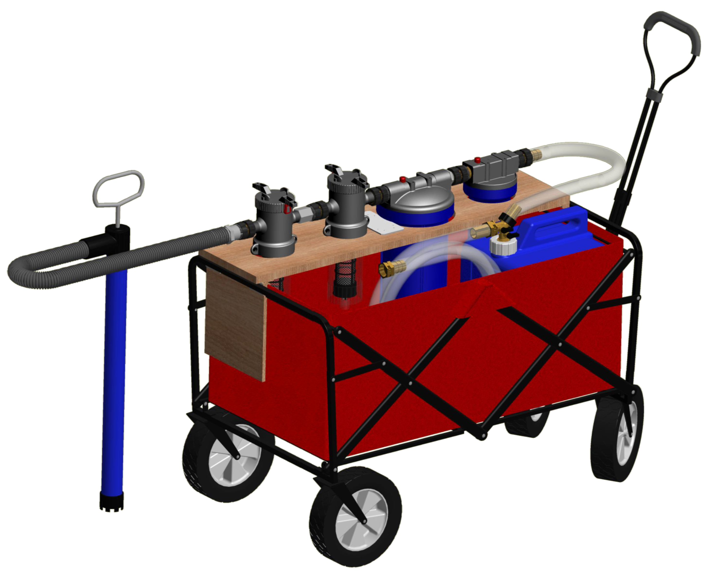

LiTreS - Liquid Treatment System
Water filtration device deployed in developing countries (Kasai, Haiti, Nigeria, Argentina, and the Philippines) to provide clean water and to prevent illness from water contamination. This a legacy project from the Gulliver Preparatory School Engineering. I was the project manager and inventor from 2013 to 2014. For our year, we designed the system to be more compact, modular, and easy to assemble. We also deployed seven devices in five countries and a patented it.